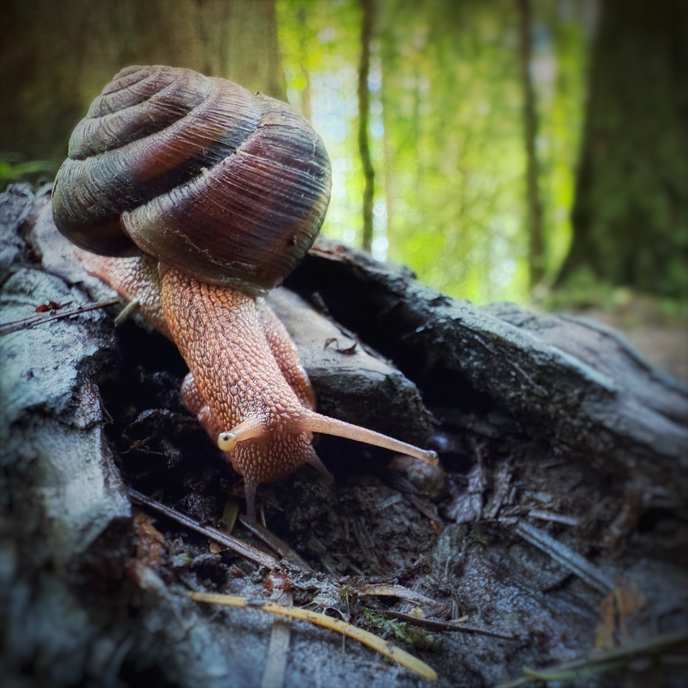

Baby chestnut-sided chickadees are in the blueberries - I love to share.
micro journal
Watched baby brown creepers getting fed, baby bushtits wiggling in their sock-like nest, and beautiful pink clouds and a half moon.
Morning coffee, evening walk in sandals, creative coding, and a Hilbert meditation.

Lot's of pairing, 5mi run, thinking time.
My computer had to get wiped today - but I got a run in.
Books, painting mini figures, and sharing time with family.
A forest run, a walk down town, and summer berries.
A hummingbird came up to me while I was picking raspberries in the garden and we had a conversation while our scrub jay friend stole a blueberry.
Talked about this site at the Recurse Center.
Orange crowned warblers greeted me after my run. Song sparrows are competing with me for blueberries - If you’re going to eat a berry then eat it - stop poking your beak in each one!
I think lefty, pantaloons, and soggy and maybe a few other crows have me trained.
Baby downy got fed in the fig tree this afternoon.
Enjoyed the blueberries from the garden, ran a 3mi loop, played with numbers.
Ok- done with cinquains - I am going to put that time into meditation. The black-capped and chestnut-sided chickadees sat next to each other so I got a nice size comparison.
It’s been half of a year since starting this journal - I may switch things up a bit tomorrow.
Running calms my entire being.
The violet-green swallows talk to me before the sun has risen in the early morning hours - gathering food for their clutch hanging from my porch.
Ran, picked berries, started PT, unplugged a bit.
hyperfocused on dihedral groups today - but managed to see a blackbird and touch wool
a run up hill, a starling in a birdbath as I played banjo, baby chickadees, and young downies.
First case of covid in the house :(
Baby chickadees! they are here everyday as the baby house finches are becoming more independent.
Chickadees, scrub jays, downy woodpeckers, and house finches came to visit me while I played banjo.
I am rusty in my drafting of wool - need to spin up.
The community named the owl bobbles - I guess I’m not the only one that got bobbled at.
Barred owlets bobbled their heads at me today. Saw a full moon with a river of Shasta daisies flowing from it.
Blueberries and strawberries and butter lettuce abounds.
My greens are so plentiful - the peas are coming in - and I worry about our community and country.
A sunny walk at Ankeny and a graduation ceremony.
When you touch the ground - maybe you are holding hands with thousands of beings through time.
Baby house finches are tackling their parents for food outside my window today - oh to be a parent.
The flicker and I had a moment today.
The first strawberries of the summer were ripe.
Travelled back home and went for a walk. The birdsongs have shifted.
Bald eagle warned us today when we realized we had walked under a nest over the trail.
Hiked Meyer Beach to sea caves with lots of warblers, mosquitos, and amazing views. Then walked the park in Ashland, WI and saw more birds.
Birding on Madeline Island. The black water of the bog with bright magnolia warblers was a contrast to love.
Birds all day - The ruffed grouse was deep in the forest of so many warblers.
Birding + drive + birding + running + birding + food + birding
On my way!
Packing for a trip.
The osprey brought a catch into the nest as I cooled down after my run. A good day.
Nuthatches honking first thing in the morning.
A starling thought he was a purple finch today.
Beautiful yellow goldfinches lined my garden today.
Started working on an inquiry math series of activities, ran, appreciated song sparrows.
Nothing to report. Just coffee, fire, parakeets, and home stuff.
Pondered forest fractals. Also – Do snails hop or shuffle if they only have one foot?
A neighborhood run in a new neighborhood.
A day with mom.
Contemplating big changes.
Treasuring the last camas blooms this year.
Lot’s of connections made, time in the bookstore, and a silent run in the neighborhood.
I took a walk and heard chickadees.
Some days are too full of pollen - walked at Willamette Mission State Park and birdwatched for the international migration day.
A run to coffee with a dear friend and then back (~9mi).
A walk among warblers, camas, and tanagers that have just arrived. Feeling a little overwhelmed today and so I went into nature.
Beautiful day birdwatching, learning, running.
I played Luna, my banjo while budgies crunched their beaks in contentment.
Green heron talked to me from the trees while a red-winged black bird flipped over lily pads to look under them today.
Marsh wren let me know where all the sora were.
Beach day - birds and rocks and birds and rocks and birds.
A little snake greeted me, but I had to tell them that I wasn’t ready for a finish line yet.
A raft of wood duck ducklings floated down the willamette with their mom.
I sat and watched the swallows tonight.
The springtime snow of cottonwood falls from the sky, over river, dusting paths, swirling above.
My tree has been planted!
I found a tree to love - she’s a hawthorn and she has a hole dug and ready for tomorrow.
Read a book, did a short talk, went for a walk.
Wood ducks and kingfishers and little yellow goldfinches like leaves in a swamp and killdeers calling my name.
There is wonder to be found in the tiniest of feathers.
Contemplating my current path that is maybe just walking in a field.
Fairy slippers and Oregon Irises on Earth Day.
I need to make more zines.
Mystery solved - I am allergic to poison oak. In other news - I saw 50 different species of birds today.
Fast run. I’m so grateful for this body.
Went looking for tracks and found cougar tracks with turkey remnants in the forest with a friend. Took pics of flowers.I also saw a checker lily, and returned to the meadow but could not find it.
A run to energize the day led to tomatoes, peas, and lettuce planting. I ran into a friend and have a date for trillium tomorrow.
I saw the bebe.
Worked on a Hilbert quilt block (64 squares) today.
Building a bed, planting carrots, knitting, listening to books.
Elk, river otters, eagles, redwood sorrel, stream violets, and switchbacks at Cascade Head while thinking of the history of this sacred space.
To clear a bed, sometimes you need to cook some soup.
Contemplating music, composition, and yeet paths.
Planting and cleaning raised beds. Food is service.
The camas lilies are here!

Evening tea with a friend after a hard day
Running is a mediation of being alive.
Played with Hilbert + Fiber art ideas today.
I walked through the grossest water today to not let the end of the road be the end of the road.
Garden bed prep - planted the garlic.
Played with untouchable numbers, got seeds in for the garden, took time to appreciate the robins. Worried about my mom.
A day of sharing, learning, stretching, and reading.
A beautiful run with swifts, and osprey, and golden clouds.
A meditation today on an echoic embrace.
Decompressing today.
A walk of trilliums and more trilliums with lots of trilliums.
Last day of the recurse center - what is in the next chapter?
Finished my first sweater, ran in the wind and rain, watched the crows dance, and savored cherry blossom silhouettes
Spring is divine.
I listened to a tenor horn played in the park while sitting under a cherry tree blossoming.
Coding, writing, running, knitting, and reflecting today. Not seeing anything in my mind is like the silence my ear is incapable of.
Fawn lilies are in bloom! Trillium is in bloom and my forest is disappearing for constructions. How many years do these trillium have?
Bluebirds came house shopping today. They do this every year. So far no takers.
Hark! The orange-crowned warblers are here! Wilber came by to say hi too.
Happy Naw Ruz!!! First day of Spring (new year).
A towhee visited this morning, and the garden yielded kale for soup. I saw my first trillium of the year!!! Happy Naw Ruz! It is Spring!
A very sleepy day - played with shapes, banjo and birds.
What would a mathematical manifold personality test look like?
Played swallow-tail jig, cluck hen, chinquapin hunting, and other on my banjo tonight for my sick mom.
The fawn lilies are gathering on the forest floor. They whisper of spring.
An integrade flicker has been visiting. I was tired with the eclipse last night.
More Voronoi, a meditative run, and reflection
Played with voronoi during the day.
Great white fawn lilies are coming - I know it!
Robins bathing in puddles with junco’s at their side. A day full of code, but lots of fun.
A beautiful and meditative run, a budgie on a banjo, and espresso on ice. Little Anna’s Hummingbirds were sentries along the path - all on guard and ready for drama.
Listening to stories and cleaning today.
Cedar waxwings, tree swallows, and a sunny day - the half moon observing.
I awoke to swamp sparrows in the backyard!! The moon was radiant as the trees touched the last light.
A chorus of pine siskins spoke of migration in the backyard. Lefty the crow came to say hi.
A golden-crowned kinglet stopped by and said hi to my sister and I.
Venus spoke of ancient lullabies on my evening walk.
A day of doodles, knitting, and trying to stay awake.
A run among waterfalls - oh the joy of feeling my feet kiss the ground as the canyon drip line guides my way.
Planets are aligned.
I came upon a columns of robins playing in trees getting strangled with English ivy. Some people seek columns of butterflies, but I just found a forest of red-breasted - too-big for the leaves - acrobatics with hundreds of laughing, dancing robins. All while hearing a greater yellow-legs down in the area of the creek.
Thinking garden thoughts - what to grow this year?
Saw a morning rainbow on my run as the sun rose - just beautiful. The path grabbed the light after the storms.
Walking in the gaps of clouds.
After listening to a RadioLab and previously drawing indigo buntings with their star-guided migration I now ponder what they see - is it even color? The north and south poles as a visual beacon - I am in awe.
Contemplating the best font for running t-shirts, thinking about a robin that said hi, and savoring the look a crow gave me.
Running, boardgames, creative coding, and knitting today. No deep thoughts.
Coffee, then coffee, then knit, then run, then knit and family. A beautiful day.
A run in the mud was paced with music, decorated with eagles, and had echos of creative algorithms from previous hours embedded in my strides.
Chestnut chickadees sneak in and out of the grapes while hands of rummy are played.
Contemplating what it means to code, to write, to create in the age of AI today so that the flawed human creation is still seen - untainted.
Overwhelming gratitude for a run in the rain.
played games and organized
Great horned owls duet as the planets manifest.
Little junco footprints and golden-crowned kinglets jumping in melted tree skirts. Generative art forming in the ice with nature’s code.

Heads down, but crows said hello. Contemplated words and poetry.
Two Red-tailed hawks soared overhead, the flickers “pew-pew’d,” and I think I hear a robin giggle.
When the sun is setting and the moon is full and rising, your shadow tells you where to look.
Cooked lentil soup, knitted, and watched the robins at the cemetery conversing with their friends. Wilber (the cooper’s) teased the budgies today.
A run through the mud and fields, then I sat and watched 5 bald eagles. Stitches were knit, a book was read, rummy was played.
Played the piano and wrote a song. Walked after sunset and took the moon’s radiance into my being.
A misty moon, purple clouds, and a little junco joined in parallel play today.
Snowflakes, fast moving clouds, and moments with the sun.
A day of beautiful transition.
The day was gone, so I went out to talk to the moon and the winter trees.
A day of math-ffirmations. Pondering equations of life.
To run the oaks in a city park is splendid.
The even and odd shadows that are cast on us - define the light.
Mathy thoughts of recursive subtraction and sums.
Thinking of music in 7/4 today - I need to write it down.
I woke up to 6 bluebirds at dawn and saw two snipes at dusk. I am grateful for the sun along the Willamette River.
A beautiful day, a mindful meditation, and an intimate conversation with a crow.
The intensity of some looks...
A friend reaches wide for a hug.
A hyperfocused day, but a nice walk in the sunshine.
Bushtits everywhere! The sun beckons me earlier each morn.
The moon has been beneath my feet for the past few days. I want a glimpse.
A friend reached for Saturn.

I find myself being molded by what I chose to note and observe.
I watched sea-foam skate, rocks make comet trails in waves, and oystercatchers dodged a wave.
Some trees remind you of how young you are.

I took a moment to stop thinking and just knit with a soft wool green yarn.
Walking meditation - 8 steps as I breathe in and 7 as I breathe out - this must be my polyrhythm.
A misty day - in many ways.
A reflecting day.
I watched fluffy robins bathe vigorously in the birdbath.
A walk with a friend, a finished hat, existence contemplated.
A thought today: What is it to hold the geometry of self? What are your faces, vertices, edges? Your Chirality?
A walk in the fields at night was just delightful. The birds, Jupiter, the waxing moon, and cackling geese filled my soul.

Oh my crows - I am grateful you are here with me.

Robins bring me to a present moment.

Puddles reflect forest by my muddy feet. A moment of awe.
The sun is out! Went for a walk where the river overflowing takes the trail and the kingfisher calls.
The wonders we find on walks:

Reading and knitting all day.

Tea, code, reading, and a walk. Over 18 goldfinches together - such communal bathers. I saw the moon! Finally the clouds opened enough.
A foggy day - mentally and physically.
I didn't realize turkeys go door-to-door.
A swollen river brought the end of so many paths to me. A point of reflection and birdwatching while retracing my steps - A walk of capillaries.
A long stretch and time for doodles.
Oh moss - you amaze me - a world within a world.
A day of sorting books and decluttering while it drizzles. Yellow-rumped warblers chase each other and the wind nudges for attention every now and then.
I saw 8 northern harriers hunting together - what a sight! Also - lot's of northern shoveler tails.

Games of Splendor, drive-by birding, and a walk in the sunshine with my mom by a lake.
Rainy walk + pumpkin soup + mint tea - a simple day
I saw a light in the forest. Practicing contentment today.

Sometimes I feel like I live in a painting.
My red oak friend's arms hold a habitat of moss an ferns that greet me on my walk with soggy shoes. I glimpsed the blue sky for a moment today.